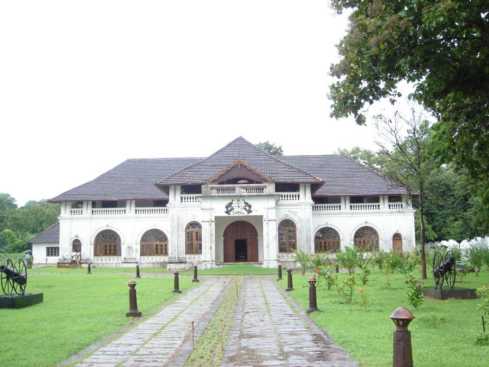

Athirapally Falls
Located 60 km from the Thrissur district of Kerala, Athirapally Falls is a marvellous cascade of frothy waters that makes its way from the Anamudi mountains of the Western Ghats. Also called as Bahubali Waterfall, this 80 ft high and 330 ft wide marvel is the largest waterfall in Kerala. It is often referred to as the "Niagara Falls of India". From here, the Athirapally falls flows through the verdant greenery of Vazhachal Forest toward the Arabian Sea, creating a spectacular vista of scintillating water, emerald jungles and azure sky.

Charpa Falls
Charpa Falls is another one of the nature's delight that displays the blessings of Mother Nature. Cascading down from a shot height, this fall which is a part of River Chalakkudy offers a breathtaking experience. Athirappilly Falls and Lake Vachumaram are a stone's throw away from Charpa Falls.

Vazhachal Falls
There are tree shades and sitting arrangement built around is a good place to relax with friends and family. The rocky falls are really a must visit spot. Vazhachal Falls is a popular picnic spot. Quality time can be spent here with the family. The place is located at a distance of 60 km from Thrissur city and 5 km from Athirapilly Falls. Vazhachal Falls have dense forests of Sholayar ranges surrounding

Shakthan Thampuran Palace
Shakthan Thampuran Palace situated in the town of Thrissur marks the royal residence of the king of Cochin and has been a famous tourist attraction because of its historical value. Popularly known as Vadakkekara Palace, it dated back to the time of the King of Cochin named Rama Varma Shakthan Thampuran and was constructed in 1795. The king was a very generous ruler, and the duration of his reign was known as the 'Golden Age of Kochi'. The beautiful palace with an amalgamation of Kerela and Dutch style of architecture is worth laying eyes on and should not be missed out on if you're on a trip to Thrissur.
